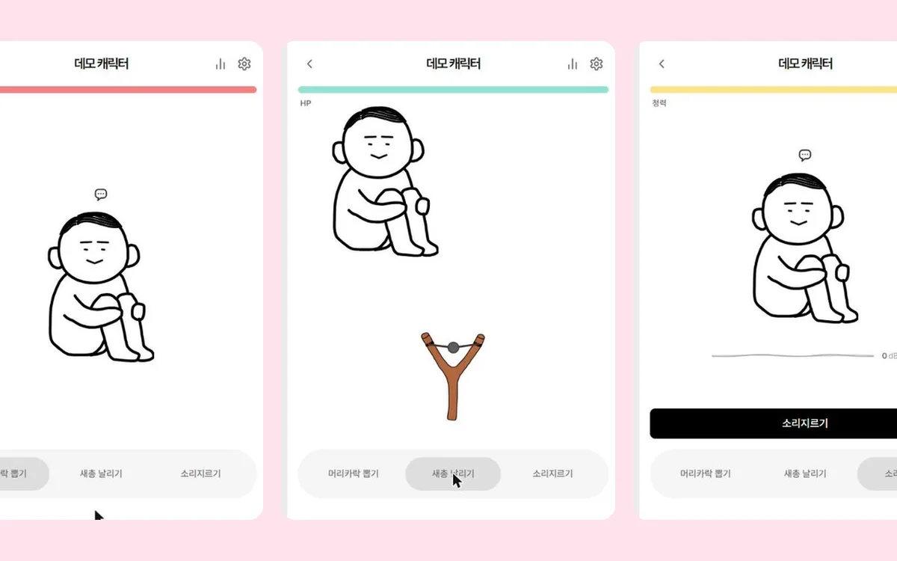

04 기술 스택
주로 쓰는 기술과 도구
MAIN 주력
 React
React- React Native
 TypeScript
TypeScript Redux Toolkit
Redux Toolkit SCSS
SCSS Styled-components
Styled-components
EXPERIENCED 써 본 것
 Next.js
Next.js Supabase
Supabase Vercel
Vercel Zustand
Zustand Socket.IO
Socket.IO MQTT
MQTT Leaflet
Leaflet Vite
Vite Vitest
Vitest

TOOLS 도구
 Claude Code
Claude Code Claude API
Claude API Figma
Figma Android Studio
Android Studio Xcode
Xcode AWS S3
AWS S3 CloudFront
CloudFront